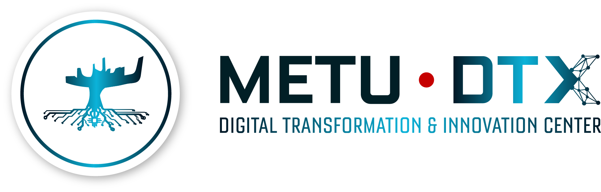

METU DTX ile Dijital Dönüşüm Yolculuğunuza Başlayın
METU DTX Dijital Dönüşüm Platformu, firmaları başvuru ve öz değerlendirmeden uzman incelemesine, kanıta dayalı olgunluk skorlamasına, yol haritası hazırlığına ve uygulamaya hazır proje planlamasına kadar yapılandırılmış bir süreçte yönlendirir.
Dijital Değerlendirmeden Ölçülebilir Dönüşüme
Dijital dönüşüm yalnızca BT harcaması olarak ele alınmaz. METU DTX metodolojisi dijitalleşmeyi verimlilik, kalite, izlenebilirlik, çeviklik, maliyet, kaynak verimliliği ve ölçülebilir iş sonuçlarıyla ilişkilendirir.
Tedarikçiden bağımsız değerlendirme
Firmalar, belirli bir teknoloji tedarikçisine veya ürün setine yönlendirilmeden yapılandırılmış ve kanıt odaklı bir olgunluk görünümü elde eder.
BT envanterinin ötesinde
Değerlendirme, dijital yetkinliği operasyonel performans, yönetim sistemleri, veri kullanımı, kalite, verimlilik ve dönüşüm hazırlığıyla ilişkilendirir.
Yol haritası, proje kartları ve aksiyon kapıları
Süreç, teşhisten önceliklendirilmiş aksiyonlara, uygulama mantığına ve teknik doğrulama yollarına geçişi sağlayacak şekilde tasarlanmıştır.
Yapılandırılmış Değerlendirme-Yol Haritası Akışı
Platform, firma girişinden uzman doğrulamasına, olgunluk analizinden dönüşüm yol haritası hazırlığına kadar dijital olgunluk değerlendirme yolculuğunu yapılandırır.
Firma Başvurusu
Firma profili, temel bilgiler, iletişim detayları ve değerlendirme kapsamı platformda oluşturulur.
Öz Değerlendirme
Firma ilk dijital olgunluk öz değerlendirmesini tamamlar ve mevcut durumuna ilişkin yapılandırılmış bir ilk görünüm sunar.
Uzman İncelemesi
METU DTX uzmanları, sunulan bilgileri kanıt incelemesi, görüşmeler, gözlemler ve gerektiğinde saha değerlendirmesiyle doğrular.
Olgunluk Analizi
Platform; olgunluk skorlarını, gözlemleri, güçlü yönleri, gelişim alanlarını, önerileri ve stratejik bulguları yapılandırır.
Yol Haritası Planlama
Öncelikli dönüşüm alanları proje kartlarına, sıralama mantığına ve fazlandırılmış dönüşüm yol haritasına dönüştürülür.
Kanıta Dayalı Dijital Olgunluk Değerlendirmesi
Değerlendirme modeli firma girdilerini, uzman yorumunu, olgunluk skorlamasını ve yol haritası odaklı analizi birleştirir. Değerlendirme kanıtlarını dönüşüm önceliklerine çevirmek için tasarlanmıştır.
Değerlendirme modeli
Model, firmaları stratejik dönüşüm boyutları, kategori bazlı değerlendirme ve yalnızca beyana değil doğrulanmış kanıta dayalı 1–5 olgunluk mantığıyla değerlendirir.
Olgunluk mantığı
Skorlama mantığı; manuel ve parçalı uygulamaları entegre, veri odaklı ve optimize dijital işletim modellerinden ayırmayı amaçlar.
Platform; skor kartlarını, radar grafikleri, kategori bazlı bulguları, GİFT/SWOT girdilerini, önerileri ve rapora hazır çıktıları destekler.
Firmalar Ne Alır?
Platform, değerlendirme girdilerini ve uzman incelemesini pratik dönüşüm çıktılarına dönüştürmek için tasarlanmıştır.
Mevcut Durum Görünümü
Firmanın dijital olgunluğunu, güçlü yönlerini, zayıf/gelişime açık alanlarını ve iyileştirme başlıklarını gösteren yapılandırılmış görünüm.
Olgunluk Raporu
Eksen bazlı bulguları, gözlemleri, önerileri ve yönetici seviyesi içgörüleri kapsayan rapor.
Dönüşüm Yol Haritası
Firma öncelikleri, proje sıralaması ve uygulama fizibilitesiyle uyumlu fazlandırılmış yol haritası.
Proje Kartları
Kapsam, beklenen faydalar, zamanlama, riskler ve yatırım mantığını içeren uygulamaya hazır proje kartları.
Olgunluk Raporu
Proje Kartı
Değerlendirme Sonrası: Doğrulama ve Uygulama Desteği
Değerlendirme çıktıları test-before-invest hizmetleri, pilot doğrulama, çözüm sağlayıcı eşleştirme, eğitim ve uygulama desteğiyle ilişkilendirilebilir.
Akıllı ve Esnek Üretim Sistemleri
Robotik, kalite güvence, bakım, yüzey hata tespiti ve üretim hücresi doğrulama.
Yapay Zeka ve Büyük Veri Analitiği
Üretim optimizasyonu, veri işleme, kestirimci bakım, kalite analitiği ve yapay zeka destekli kullanım senaryoları.
AR/VR ve Dijital İkiz
Simülasyon, eğitim, dijital ikiz senaryoları, süreç görselleştirme ve operasyonel öğrenme ortamları.
İnovasyon ve Değişim Yönetimi
Değişime hazırlık, yol haritasının uygulamaya çevrilmesi, pilot uygulama ve ikiz dönüşüm desteği.
Dönüşüm Projelerini Yatırım Kararlarına Hazırlama
Platform, olgunluk bulgularını proje kapsamı, beklenen etki, uygulama riskleri, finansman uyumu ve ölçülebilir çıktılarla ilişkilendirerek dönüşüm projelerinin daha net hazırlanmasını destekler.